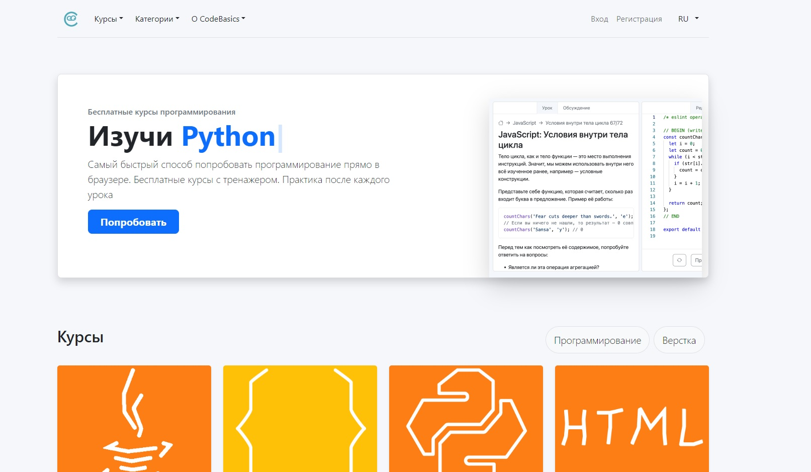

- Team Lead: v-nv
- fedormalinin
- AlexGorSer
- Сайт для обучения основам
- Игры 2D: Battle City или Mortal Kombat
- Новостной сайт
- RSS - форум
- Сайт хостинг для видео
- Сайт для поиска вакансий
- Messenger
Название проекта:
Обучающий сайт по HTML CSS ... (название временное)
Прототип для сайта
Frontend
- Сборщик Webpack
- Vanilla JS/TS
- Предпроцессор SCSS
- Prettier
- Eslint
- CodeMirror
- CodeMirror
- JSHint
Back-end
- Nest.js
- bcryptjs
- jwt
Frontend
- v-nv
- fedormalinin
Back-end
AlexGorSer